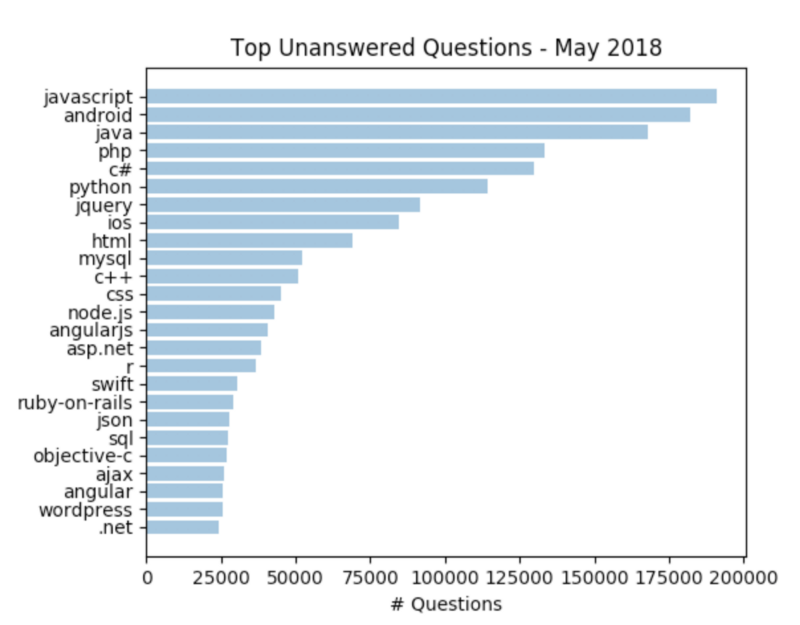
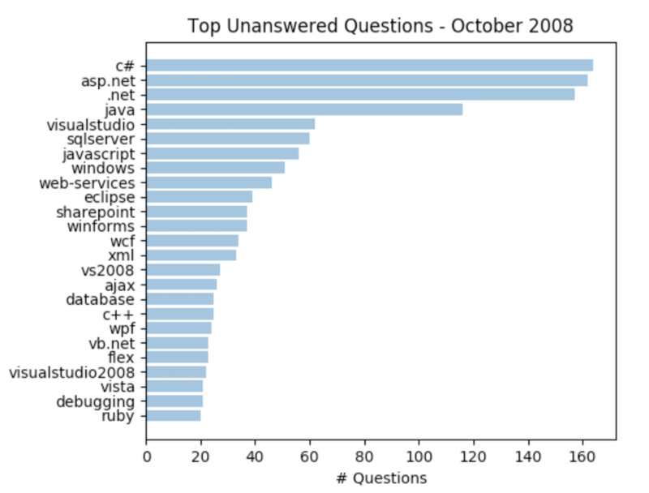
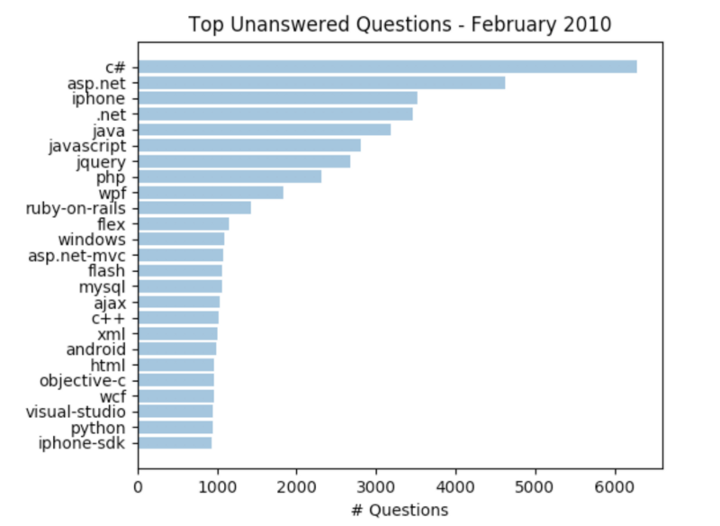
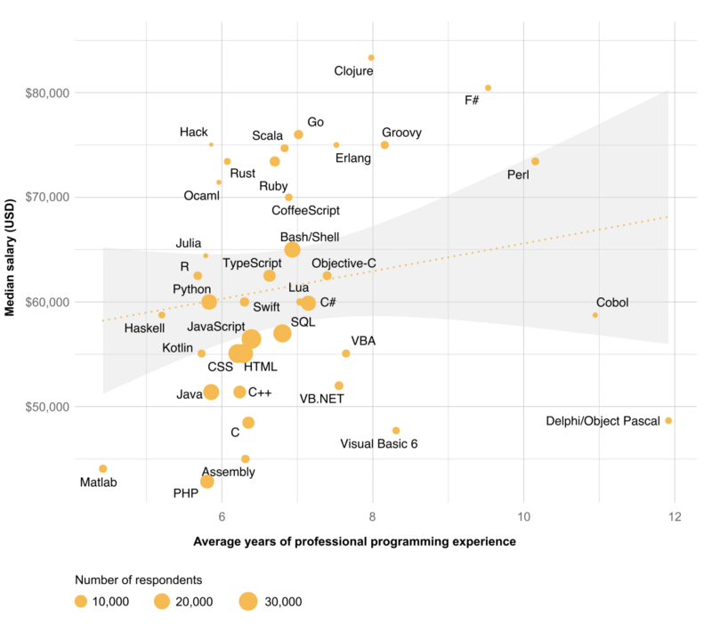

Find Your Next Programming Language By Measuring “The Knowledge Gap” on StackOverflow.com
Published on May 24, 2018 on Medium.com

(Source: Lucas Amunategui)
Ten years ago, I was in the mood for a new programming language. The statement may sound casual and easy, but it was anything but that. I had cut my teeth on .net and ASP for a few years and was ready for something new and fresh, but not too experimental, as I wanted to grow my professional skillset and career prospects.
I couldn’t ask those around me as we were all working under the same framework and using the same languages — it would’ve been about as useful as asking it to myself. And the prospects of asking for opinions, like which is better R or Python, and suffering through the resulting long circular monologues, sounded horrendous and of little help.
I sent out an email campaign to distant contacts and carried some conversations with people outside my company. This was the best I could come up with to avoid technical bias and social conformism.
Things are different today as we have access to Stack Overflow, a phenomenal tool.
As part of the site’s web stats, they break down the number of unanswered questions by programming language. In essence, they have invented a unit of measure, ‘the knowledge gap’. Check it out at https://stackoverflow.com/unanswered and look in the lower right of the page. When you think about it, you are getting two critical pieces of information:
- How popular is the language
- How many are struggling with it
If lots are struggling and it isn’t a popular language, then you conclude that the language is flawed and learning it is a bad career move. If it is popular but nobody has issues, then its probably a crowded field and not a good career move either. But when popularity and unanswered questions are aligned, boom, you’ve got a winner!
{% include follow-me.html %}Currently, there’s almost 2 million unanswered questions and JavaScript is leading the pack.

For those that aren’t familiar with Stack Overflow, it is the lifeline of the tech community. We go there to whine and unload our troubles — like a psychoanalyst for programmers. If you post your questions and they are well formed, you’ll copy/paste you’re way out with a solution, if not, you’ll get slapped around — it’s very humbling. But if you’re like me with an endless supply of questions, you quickly grow a thick skin — as this is a huge time saver and its all free!
I recommend going there on a regular basis if you want to keep abreast of trends and track what is moving up or moving down the unanswered list. This is not only useful for those seeking to learn a new language, it can help recruiters, tool builders, CTO deciding on new technology, etc.
Using the Wayback Machine and traveling back 10 years (right around when SO launched), we see that they had some 2,000 unanswered questions with C# leading the pack.

More interesting, in February 2010, with much more data to analyze, we see some 69,000 unanswered questions. C# still leading the pack but iPhone and PHP appear and moving up fast. Even Python makes a timid appearance.

I’d like to think that this data would have made me look more seriously into Java and JavaScript. But in the end, I successfully transitioned to R and Python and fell in love with both. But it is nice to know we have some cold, hard facts about what people are using and what people are struggling with. Beats asking your peers whether its best going SAS or open source — and feeling your eyes glaze over and instantly regret the ask amidst the long winded, and entirely subjective lecture.
One more nugget from the good folks at Stack Overflow — I’ve been keeping the best for last — the Insights Survey (https://insights.stackoverflow.com/survey/2018/). This list compliments the “unanswered questions” list by throwing in salary and experience. If you look for the biggest circle, closest to the top-left, you’ll draw yourself a treasure map to the best paying job with the smallest learning curve! Wow, where was that 10 years ago!!!

(Source: Stackoverflow.com)
Thanks for reading!
Manuel Amunategui